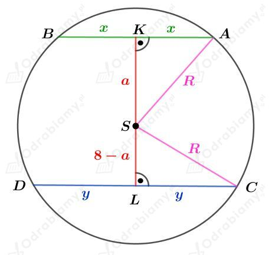

Kul przecito dwiema r贸wnolegymi paszczyznami. Otrzymane przekroje s koami.
Rysunek:

Wiedzc, 偶e pola otrzymanych przekroj贸w s r贸wne 9 i 25 mamy:
Korzystajc z twierdzenia Pitagorasa dla tr贸jkta SAK otrzymujemy:
Korzystajc z twierdzenia Pitagorasa dla tr贸jkta LCS otrzymujemy:
czyli
wic
Rysunek:
Podstaw tego ostrosupa jest prostokt o polu r贸wnym S, wic
Rozwa偶my tr贸jkt prostoktny ADS. Korzystajc z definicji funkcji tangens mamy:
Rozwa偶my tr贸jkt prostoktny ABS. Korzystajc z definicji funkcji tangens mamy:
Wiedzc, 偶e b=S/a mamy:
Wiedzc, 偶e h=atg mamy:
Wyznaczmy objto tego ostrosupa. Mamy:
Rysunek:
Korzystajc ztwierdzenia Pitagorasadla tr贸jktaAESotrzymujemy:
Korzystajc ztwierdzenia Pitagorasadla tr贸jktaCSEotrzymujemy:
Rozwa偶ajc pole tr贸jkta ECS otrzymujemy r贸wnanie:
Wyznaczmy objto tego ostrosupa. Mamy:
Rysunek:
Wiedzc, 偶e pole powierzchni ciany bocznej jest cztery razy wiksze od pola powierzchni podstawy mamy:
Korzystajc ztwierdzenia Pitagorasadla tr贸jktaADSotrzymujemy:
Rozwa偶my pole powierzchni jednej ciany bocznej tego ostrosupa. Zapisujc to pole na dwa sposoby otrzymujemy r贸wno:
Korzystajc ztwierdzenia cosinus贸wdla tr贸jktaABEotrzymujemy:
Dany jest prostopadocian P1 przedstawiony na rysunku:
Dany jest prostopadocian P2 o objtoci r贸wnej V2=64.
Prostopadocian P2 jest podobny do prostopadocianu P1.
a)
Wiemy, 偶e=60o.
Rozwa偶my tr贸jkt prostoktny ACA1. Korzystajc z funkcji tangens otrzymujemy:
Wyznaczmy objto prostopadocianu P1. Mamy:
Wyznaczmy skal podobiestwa k tych prostopadocian贸w. Wiedzc, 偶e szecian skali podobiestwa bry podobnych jest r贸wny stosunkowi objtoci tych bry mamy:
b)
Wiemy, 偶e =30o.
Wyznaczmy dugo przektnej A1C tego prostopadocianu. Mamy:
Rozwa偶my tr贸jkt prostoktny CD1A1. Korzystajc z funkcji sinus otrzymujemy:
Wyznaczmy objto prostopadocianu P1. Mamy:
Wyznaczmy skal podobiestwa k tych prostopadocian贸w. Wiedzc, 偶e szecian skali podobiestwa bry podobnych jest r贸wny stosunkowi objtoci tych bry mamy:
Rysunek:
Kwadrat CDEF jest kwadratem wpisanym w podstaw tego sto偶ka.
Odcinek CE jest przektn tego kwadratu. Mamy std:
Korzystajc z twierdzenia cosinus贸w dla tr贸jkta CDS otrzymujemy:
Korzystajc z twierdzenia cosinus贸w dla tr贸jkta BAS otrzymujemy:
Rysunek:
Odcinek DE jest odcinkiem czcym rodki bok贸w tr贸jkta r贸wnobocznego ABC, wic
czyli
Odcinek h jest wysokoci tr贸jkta r贸wnobocznego, wic
Korzystajc z twierdzenia Pitagorasa dla tr贸jkta DPS mamy:
Wyznaczmy pole przekroju DES. Mamy:
Wyznaczmy dugo odcinka PO. Mamy:
Wyznaczmy cosinus kta, kt贸ry paszczyzna przekroju tworzy z podstaw tego czworocianu. Mamy:
Rysunek:
Pole powierzchni podstawy tego ostrosupa wynosi S, wic
Rozwa偶my tr贸jkt prostoktny OES. Korzystajc z funkcji cosinus mamy:
Korzystajc z twierdzenia Pitagorasa dla tr贸jkta ABE otrzymujemy:
Korzystajc z twierdzenia Pitagorasa dla tr贸jkta BES otrzymujemy:
Korzystajc z twierdzenia cosinus贸w dla tr贸jkta AES otrzymujemy:
Korzystajc z jedynki trygonometrycznej mamy:
Obliczmy pole otrzymanego przekroju. Mamy:
Rysunek:
Odcinek OP stanowi 1/4 dugoci przektnej kwadratu o boku dugoci a, wic
Rozwa偶my tr贸jkt prostoktny FCS. Korzystajc z funkcji tangens mamy:
Korzystajc z twierdzenia Pitagorasa dla tr贸jkta OFS otrzymujemy:
Wyznaczmy tangens kta, kt贸ry paszczyzna przekroju tworzy z postaw tego ostrosupa. Mamy: